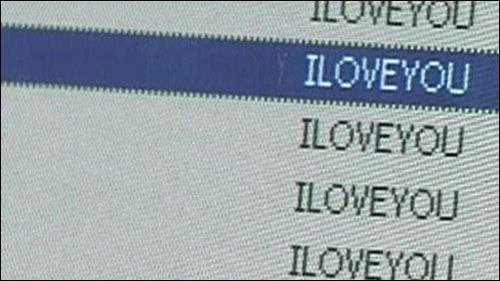

My favourite viruses

Many viruses are annoying, or just plain rude. But some have really creative payloads and interesting effects! Some, like love song, just play a song once a month! Others, like Chernobyl set out to destroy your whole PC.
My top five computer viruses
- Sasser worm - Sasser exploits the system through a vunrable port, so it spread quickly with no human interaction. It causes your PC to shut down every 10 seconds, repeatedly. It affects Windows XP and Windows 2000 PCs.
- LoveLetterForYou.txt.vbs - LoveLetter uses social engineering to infect your system. It comes in an e-mail made to look like a friend sent it, confessing their love. Originally it was harmless enough, just made to see how far it could be sent, but it was edited by other virus writers to become seriously malicious.
- Jerusalem - Jerusalem was arguably the first destructive dos virus! It's set to go off every friday 13th, except in the year of 1987. It's called Jerusalem because it was first detected in Jerusalem University. It deletes every file that is activated on that day, with the error message :"Bad command or file name."
- Chernobyl // CIH virus - CIH first appeared in 1998. It destroyed the BIOS chip, filling the first 1024kb with zeros. It affects all Windows 9x systems. It fills all the spaces in the code of the infected files with its code.
- Lovesong - Lovesong is a non-destructive virus that infects Windows 95 and Windows 98 PCs. It infects .exe files. It lays dormant until the first of the month in any year after, and including the year 2000. It launches a box, with random letters and underscores, and plays "Saranghaeyo" (the song used in South Korean LG commercials in the 90s). It denies all input until the song is over.